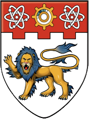
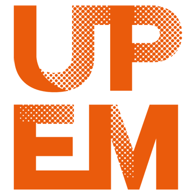
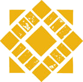
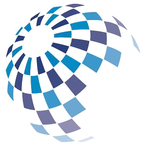
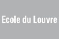
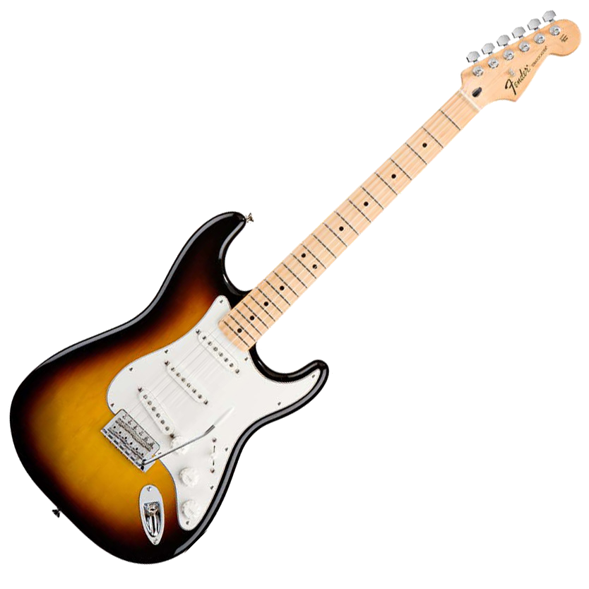

I love finding solutions to problems. I chose computer science because it is everywhere and this choice does not limit me and gives me the possibility to work on anything from anywhere!
EFREI Engineering Institute
M.Sc. in Computer Engineering
After 5 years of studying I obtained my Master's of Science in Computer Engineering with Honours in 2013! Besides solid skills in computer science, mathematics and management, I also had the opportunity to lead the international club for a year and to spend 2 semesters abroad!
Nanyang Technological University
Exchange Semester
I loved every single second of my time in Singapore studying at NTU! I studied Artificial Intelligence, Neural Networks, Embedded Systems and Organisational Leadership. This semester was the highlight of my student life and a great opening into Asian culture as a whole.
Université Paris-Est Marne-la-Vallée
B.Sc. in Mathematics and Computer Science
While pursuing my engineering degree at EFREI, I obtained a Bachelor of Science with Honours from a partner university. I never put a feet in there, and I would have trouble locating it on a map, but I still somehow hold a diploma from there. It was actually useful for my exchange in Singapore as I could them take Master's level classes!
San Jose State University
Exchange Semester
During my time in San Jose, I studied the likes of OS, Cody Theory, Networks and Entrepreneurship and visited a few companies in the area. It was also a first interesting glimpse into American culture and into the Bay Area. My favorite part was visiting Lake Tahoe and realising that there is more to California than sun and beaches!
Lycée Français Jean-Monnet
French Baccalaureate in Sciences
I attended a French international school for my secondary education in Brussels after spending my early years in Africa. I always loved sciences and at that time I wanted to become an astronmer!
Software Engineer
Stratocore
For almost 2 years, I was the lead software engineer at Stratocore, a small company that provides a management SaaS solution (PPMS) to research labs. My role as a software engineer was to build a new API-based codebase from the legacy monolithic app and to add new features along the way. I also championned new software development processes such as a branch-based version control workflow, specs and a test strategy.
Mobile Applications R&D Engineer
Bouygues Construction - Structis
Working withing the R&D department of Structis was a great experience! For 6 months, I was given almost complete freedom to experiment and build hybrid mobile apps based on the company's internal software and mobile strategy. I designed an enterprise appstore, maintained and developped new versions of the company's directory app and developped a mobile version of the company's document management tool.
Windows Sidebar Gadgets Developer
Bouygues Construction - Structis
My first real experience in a real job was during my summer internship in 2012. At Structis, within the R&D department, I was in charge of studying the different ways Windows sidebar gadgets could be used within the company. I also wrote a 55-page development guide and crafted 14 production-ready prototypes. All that in only 14 weeks!
President
EFREI International
This is probably the position I am the proudest of, even though it has nothing to do with computers or it being an actual job. After 2 years of active involvement in the international club at EFREI, I step up and became president for a year, welcoming more than 80 international students and managing a 40-people team and almost $10k of financing.
Intern
Bibliothèque de l'Ecole du Louvre
During the month of July 2009, I was working, alongside some of my classmates, at the Library of the Ecole du Louvre. It was a physical and repetitive work (moving books around, doing the inventory and scanning exams), but it was still an interesting and rewarding experience. I got to see the Mona Lisa almost every day!
Travel
25+ countries ... and counting!
Travelling has been part of my life for as long as I can remember. Growing up in Africa, then living in Europe for almost a decade and then taking a year to travel the world has been an incredibly enriching experience and I hope I can continue enriching myself and the people I meet throughout my next adventures!
Road Cycling
Because those guys are just heroes!
The first time I watched a stage of the Tour de France on TV, I didn't really get it ... A breakaway? A peloton? 5 minutes ahead? Road cycling is a very interesting sport as it is a team sport with individual ranking. It is more tactical than it may seem and it's really about going 100% at the right time. I also like riding bikes, and I plan on investing more of my time cycling around!
Guitar
Rock 'n' Roll
I started playing the guitar out of boredom one summer once in college, and I ended up playing it for a couple of years regularly until I put my electric guitar aside. I am still an avid rock music fan and like to play a few chords here and there, but I definitely need to pick up my guitar more often!
Vexillology
Vexillolo ... what?
I remember the day we got our first dictionnaries in primary school. I was still in the Ivory Coast, and the first few pages where filled with the flags of all the countries (the last few where maps). I guess I was so bored in class that I went on to learn every country, its capital and its flag! That knowledge has proven more useful than I thought and I love updating my wisdom on each and every country by travelling and experiencing them!
Education
Moving civilisation forward, one book at a time!
Maybe it is because I come from a family of teachers, or maybe it is because I have experienced numerous educational systems, but I strongly believe that if we want a better world and a better society, we need a better education for everyone!